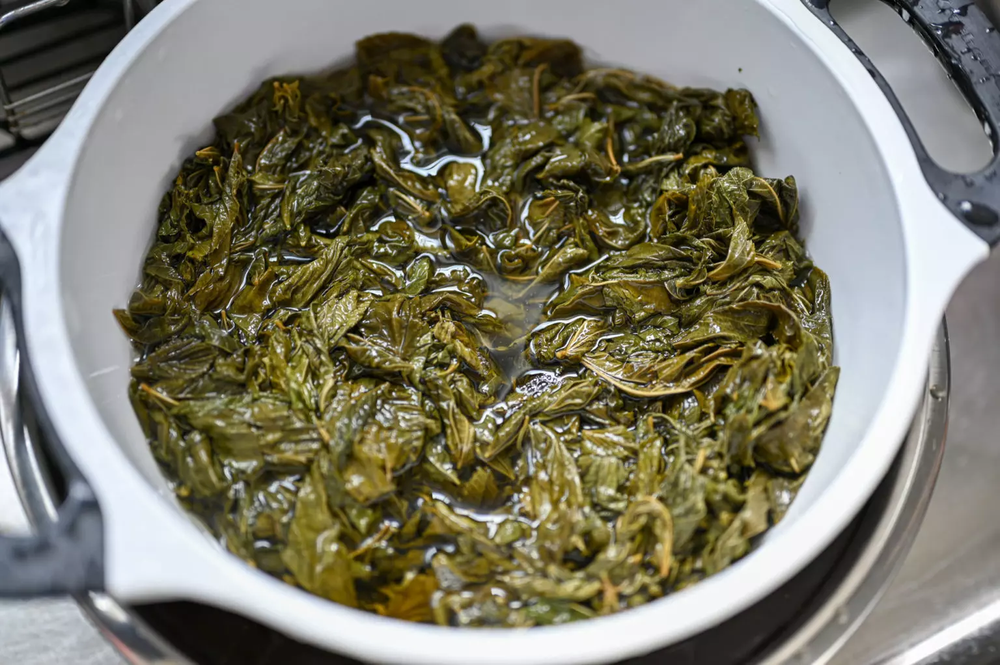

Jute leaves/Jews mallow is a leafy green vegetable originating in Ancient Egypt, and found throughout the Middle East and North Africa. The dish Molokhia is considered by many as the national dish of Egypt. The Egyptian version however, differs greatly in texture and preparation from the Levantine version. The Egyptian Molokhia is more soup-like and made with minced Molokhia.
In a medium sized pot, heat one tablespoon of olive oil. Season the chicken breast with one teaspoon of salt and black pepper. Cook over high heat for about 2 minutes per side. Add the bay leaves, cloves, onion, remaining salt and about 6 cups of water. Cook on high heat until boiling, then lower the heat to medium and cook until chicken has cooked through, about 20-30 minutes. Set cooked chicken aside to cool. Once cooled, shred the chicken.
Add 10 cups of the dried molokhia leaves to a large mixing bowl. Remove any stems or brown/yellow leaves. Heat up a kettle of water until just boiling, and pour over the leaves to re-hydrate them. Let soak for at least 5 minutes. Drain the water and pour the leaves into a colander over the bowl.
Pour water over the leaves in the colander and swirl around with your hands. Drain the water and squeeze the molokhia. You will feel slime oozing out of your hands. Repeat this step until the water runs CLEAR and the molokhia is no longer slimy
Wash the fresh cilantro and cut off the stems. Finely chop and set aside.
Peel the garlic and cut in half or thirds (reserve about 5 whole cloves of garlic aside). Place in a mortar and top with a teaspoon of salt. Crush the garlic until no chunks remain.
In a large deep pot, heat up ¼ cup of ghee or vegetable oil. Add chopped cilantro and crushed garlic and sauté over medium heat for 5 minutes..

Add the washed and squeezed-dry molokhia, and whole cloves of garlic to the cilantro/garlic mix and sauté for about 5 minutes.
Using a strainer to catch the aromatics in the fresh chicken broth, add the broth to the pot of molokhia. If necessary, add additional water to cover all the molokhia leaves. Let it cook over medium heat for 20 minutes. *Add 1-2 whole Habanero peppers for added flavor. (This will not make your Molokhia spicy unless you cut the pepper open.)
Prepare the rice while the Molokhia is cooking.
For the rice recipe, please visit:
Lebanese Rice with Vermicelli Noodles
Add the shredded chicken, dried coriander, and lemon juice to the Molokhia stew. Taste for salt and add if needed. Let it simmer for 5 more minutes. *If you added the habanero peppers, remove now and set aside. They can be eaten on the side with the prepared stew for an extra spicy kick.
Serve the stew with prepared rice with vermicelli noodles.